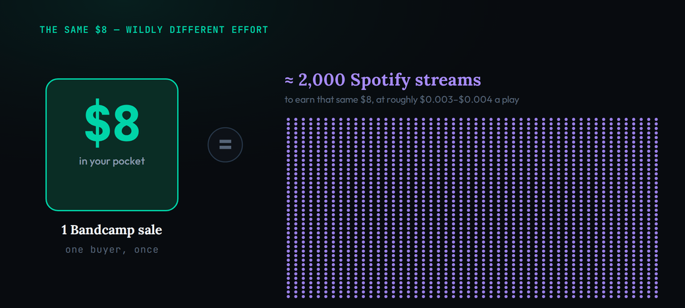
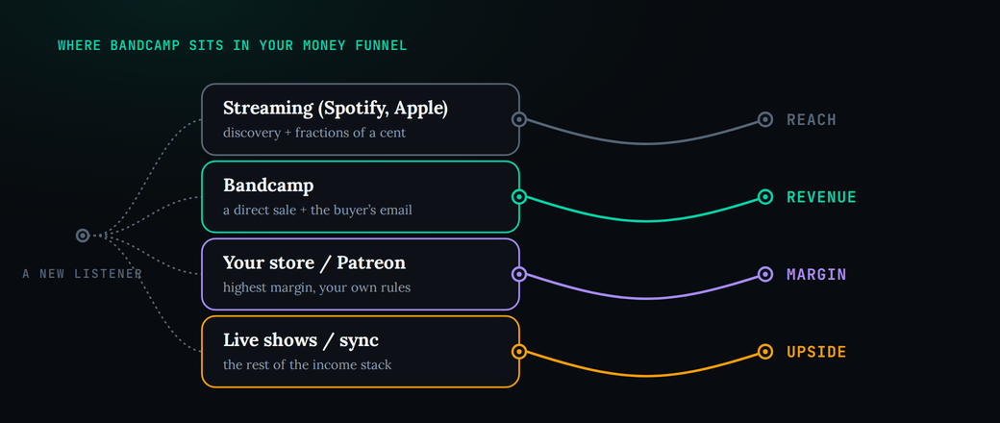

General information, not financial advice. This is a US-focused, education-first look at whether Bandcamp earns its place in your release strategy — the fees, the mechanics and the honest trade-offs. Bandcamp adjusts its fees, its Bandcamp Friday schedule and its policies regularly, and terms differ outside the US, so treat every figure here as accurate as of mid-2026 and a starting point to confirm on Bandcamp’s own pages before you rely on it. Income from music is never guaranteed, and nothing here replaces advice from an accountant or a music attorney about your own situation.
Yes — if you use Bandcamp for what it actually is. It is not a streaming service and it is no longer the discovery engine it once was; it is the best direct-sale plus fan-email-capture tool an independent artist has. One $9–10 sale nets you roughly $8, the revenue of around 1,800–2,400 Spotify streams — and unlike a stream, it hands you the buyer’s email. Fees are 15% on digital (dropping to 10% after $5,000) and 10% on merch, waived entirely on the eight Bandcamp Fridays in 2026. Treat it as your direct-revenue and owned-audience channel, build your list off every sale, and lean into Bandcamp Fridays. Worth it for selling to fans; not worth it if you expect it to find them for you.
Every couple of years someone declares Bandcamp dead. It got sold to a video-game company, then sold again to a licensing firm most musicians had never heard of; half the staff were laid off, the beloved editorial arm was gutted, and the headlines asked whether the artist-friendly corner of the internet was over. And every couple of years the obituary turns out to be wrong. In 2026 Bandcamp is not just alive — for independent artists selling music directly to the people who love it, it is arguably more entrenched than ever. The question worth asking is not whether Bandcamp survived. It is whether Bandcamp is worth your time, and for exactly what.
The honest answer requires dropping two assumptions the search results keep repeating. The first is that Bandcamp is a streaming service you compare against Spotify. It is not. The second is that Bandcamp is a discovery engine that will find you an audience. It mostly is not, and it is less of one than it used to be. Strip both away and what is left is the thing Bandcamp is genuinely the best in the world at: turning a listener who already likes you into a paying supporter whose email you keep. That is a smaller promise than “go viral,” and a far more useful one. If you already understand the broader picture from our guide to making money on SoundCloud, this is the direct-sales piece of the same puzzle.
What Bandcamp actually is in 2026
Bandcamp is a direct-to-fan marketplace. Artists and labels upload their music, set their own prices, and sell downloads, physical formats like vinyl and cassettes, and merch straight to fans, with Bandcamp handling the checkout and taking a cut. Fans can stream a preview of anything in the browser, but that preview is a shop window, not a jukebox: it does not pay a royalty. The money moves in one direction and one moment — when someone decides your music is worth paying for and clicks buy. That single design choice is why every comparison to Spotify misleads. Spotify rents your music to listeners by the play; Bandcamp sells it to fans by the copy.
The difference is not academic, it is arithmetic, and it is stark enough to reframe how you think about the platform. Consider one $10 album sale. After Bandcamp’s share and the payment processor’s cut, roughly $8 lands in your account. To earn that same $8 from streaming, you need somewhere in the region of 1,800 to 2,400 Spotify plays, because the major services pay only fractions of a cent per stream — the exact figure is a moving target we track in our breakdown of how much Spotify pays per stream. One person buying your record once is worth more to you than a couple thousand passive plays, and it took one decision from one fan rather than an algorithm’s blessing.
That is the reframe the rest of this guide builds on: on Bandcamp you are not trying to accumulate plays, you are trying to convert believers into buyers. And the mechanics reward exactly that. There is no pooled royalty pot to compete in, no editorial playlist to chase, no threshold you must clear before the money starts. A fan pays, you get paid, minus a transparent fee. If you want to understand why per-play economics are so brutal by comparison, our explainer on how streaming royalties work shows the machinery Bandcamp deliberately sidesteps.
Because the unit of value is a purchase rather than a play, Bandcamp supports a wider range of things to sell than a streaming profile ever could, and each one deepens the relationship rather than just adding a number. You can offer a straight download, but you can also crowdfund a vinyl pressing, sell a limited cassette run, package stems or a sample pack, or bundle a shirt with the record — and you set every price yourself. The pay-what-you-want option is not a gimmick either: because the buyer is a fan making a deliberate choice, a meaningful share of them pay above your minimum, sometimes far above it. A profile optimised for plays cannot capture that generosity, because there is no moment where a listener is asked, plainly, what your work is worth to them. On Bandcamp that moment is the entire product, and it is why a modest, engaged audience can support an artist that a much larger passive one never would.

The money: fees, Bandcamp Fridays, and the math that matters
Bandcamp’s fee structure is refreshingly simple to state. It takes a 15% share of your digital sales, which drops permanently to 10% once your cumulative revenue on the platform passes $5,000, and a flat 10% on physical merchandise. On top of Bandcamp’s share, the payment processor — PayPal or a card network — takes its own cut, typically somewhere between 4 and 7% depending on the transaction. Put those together and on a normal day you keep, very roughly, 80 to 85% of what a fan pays. That is a materially better split than a streaming service passing through pennies, and you see it as a single clean line item rather than a statement you need a spreadsheet to decode.
Then there are Bandcamp Fridays, which are the single best reason to plan your release calendar around the platform. On these days Bandcamp waives its own revenue share entirely, so you keep 100% of the sale price and lose only the unavoidable processor fee. On a $10 sale that is the difference between netting around $8.00 on a normal day and around $9.30 to $9.50 on a Bandcamp Friday. For 2026 there are eight of them — February 6, March 6, May 1, August 7, September 4, October 2, November 6 and December 4 — the longest schedule Bandcamp has ever announced in advance, and the second half of the year is deliberately front-loaded because sales tend to climb toward the holidays.
It is worth sitting with what that fee model means over a catalogue rather than a single sale. The 15% share is charged only on the sale, with no listing fees, no monthly platform cost and no minimum to clear before you are paid, so a working artist keeps the overwhelming majority of every transaction from the very first one. The permanent drop to 10% after $5,000 in cumulative sales quietly rewards artists who stick with the platform, and it stacks: once you cross that threshold, every future sale keeps a little more. Against a streaming model where you are effectively renting exposure in exchange for fractions of a cent, the trade is easy to read — you give up reach in exchange for keeping most of the money from the people who actually buy. The transparency matters as much as the number. You always know exactly what you earned and why, which makes planning a release, a price and a margin something you can do on the back of an envelope rather than by decoding a royalty statement.

The program is not a gimmick. Since it began in 2020, Bandcamp Fridays have moved more than $150 million directly to artists and labels, and because the dates are known months ahead you can build a real campaign around one: announce a release, open pre-orders, and drive fans to add it to their wishlist so they are notified the moment the fee-free window opens. The practical takeaway is to stop dropping music on random Tuesdays and start timing your bigger releases, merch drops and bundles to land on or just before a Bandcamp Friday, when every dollar a fan spends reaches you almost whole.
The ownership saga, and what actually changed
You cannot honestly assess Bandcamp in 2026 without addressing the elephant in the room, because it is the reason for most of the “is Bandcamp dead?” anxiety. The short history: Bandcamp was independent and profitable for over a decade, then Epic Games — the maker of Fortnite — acquired it in March 2022. Eighteen months later, in a round of company-wide layoffs, Epic sold Bandcamp to Songtradr, a business-to-business music-licensing company, in the autumn of 2023. In the transition roughly half of Bandcamp’s staff did not receive offers under the new owner, the editorial operation known as Bandcamp Daily was hollowed out, and the recently formed staff union was effectively dissolved. Those are real losses, and pretending otherwise would be dishonest.
What did not change is the part that matters to your wallet. Songtradr kept the core marketplace intact, kept the artist-first revenue split, and has continued Bandcamp Fridays every year since taking over. Its own angle is licensing: because Songtradr places music into ads, games, apps and other media, Bandcamp artists now have an optional, opt-in path to sync opportunities through that network without giving up control of their rights. The union-busting accusations and the gutting of Daily left a genuinely worse taste and a weaker sense of community. But the machine that lets a fan pay you directly runs exactly as it did — and the doom predictions of 2023 have simply not come true.
One more 2026 development is worth knowing because it signals what kind of platform Bandcamp still wants to be: in January it announced a ban on AI-generated music, including any use of AI tools to impersonate other artists or styles, with suspected AI content subject to removal. In an era when several platforms are drowning in machine-generated uploads, planting a flag for human artists and real fans was widely welcomed — and it reinforces the case that Bandcamp’s value is precisely the direct, human relationship it sells, not scale for its own sake.
The resilience is the part the obituaries keep missing. Two years after the sale that was supposed to kill it, Bandcamp is not merely surviving; it is, if anything, more firmly established as the default place independent music gets sold online, even as a handful of would-be competitors have appeared positioning themselves as alternatives. Fans kept showing up, artists kept pointing people to their pages, and the fee-free Fridays kept clearing. That durability is itself a reason to take the platform seriously: an owned relationship built on Bandcamp has proven more stable than the mood of any recommendation algorithm, which can change your reach overnight without warning or recourse. When you weigh whether to invest effort here, weigh that too — you are building on ground that has held.
What Bandcamp still does better than anything
Set the ownership drama aside and look at what the platform delivers on a Tuesday, and Bandcamp’s case becomes obvious. First and most concretely, it produces direct revenue at a scale no streaming payout matches, for the arithmetic reason we have already walked through: a handful of true fans buying your record outright will out-earn tens of thousands of anonymous plays. Second, and this is the part most guides underrate, every purchase and every follow hands you the buyer’s email address — a contact you own, can message directly, and never have to rent back from an algorithm. That is the single most valuable asset the platform gives you, and it is the bridge from a one-off sale to a durable relationship. Our guide to building a fanbase is the natural companion here, because Bandcamp is where that fanbase becomes a mailing list.
Third, Bandcamp’s wishlist quietly does promotional work for you: when a fan wishlists your release, they get nudged on the next Bandcamp Friday, turning passive interest into a timed reason to buy. Fourth, and harder to quantify, is credibility. A Bandcamp page still reads as the mark of an artist who takes their catalogue seriously — liner notes, formats, fair pricing, a real store rather than a link tree. For fans who want to support the actual humans behind the music, and increasingly for anyone allergic to AI-slop feeds, that signal matters. None of these four things — revenue, owned email, wishlist promotion, credibility — is something Spotify can give you, and together they are the entire argument for the platform.
The email capture deserves more than a mention, because it is the mechanism that turns a good sales day into a compounding asset. Treat every buyer as the first line of a conversation you own: a short, genuine thank-you, an invitation to your own newsletter, and a reason to come back. Over a year, the list you assemble from Bandcamp buyers is worth more than any single release, because you can announce your next record, your next Bandcamp Friday, or your next tour straight to the people who have already proven they will pay — with no gatekeeper in between. This is exactly the owned-audience logic that separates artists who merely release music from those who build a career on it, and it is why Bandcamp pairs so naturally with the fanbase work in the guide linked above. The sale funds today; the email compounds for years.

What Bandcamp no longer does well
Honesty cuts both ways, and the biggest thing Bandcamp is not is a discovery engine. It never had an algorithmic recommendation feed to rival the streaming services, and the 2023 gutting of Bandcamp Daily — once a genuine source of editorial discovery that could put an unknown artist in front of new listeners — removed one of the few discovery levers it did have. In 2026 you should assume Bandcamp will convert people who already know you, and will rarely be the place a stranger stumbles onto your music cold. If your goal is reach, Bandcamp is the wrong tool, and treating it as a growth channel is the most common way artists come away disappointed.
That means the top of your funnel has to live elsewhere. Discovery in 2026 happens on short-form video, on the streaming platforms’ own algorithms and playlists, and through the unglamorous work of showing up where your scene already gathers — the kind of durable, non-purchased promotion we lay out in promoting music independently, and, on the streaming side, in getting your tracks in front of curators through Spotify playlist placement. The healthy mental model is a relay: streaming and social do the finding, and Bandcamp does the converting. Expecting Bandcamp to do both is expecting a shop to also be a billboard on the far side of town.
Setting that expectation correctly is what protects you from disappointment. Plenty of artists open a Bandcamp page, wait for strangers to arrive, watch nothing happen, and conclude the platform is dead — when in truth they simply pointed a conversion tool at an empty top of funnel. The fix is not more Bandcamp; it is more of everything that sends warm listeners toward it. Think of your Bandcamp page as the destination at the end of every other channel: the link in your video description, the pinned post, the line in your email footer, the QR code at the merch table. When you consistently route people who already like you toward a page built to let them pay you, the platform performs. When you expect it to generate that interest from nothing, it will always look broken. The tool is excellent; it just does one job.
How to actually sell on Bandcamp
If the platform fits your goals, setting it up well takes an afternoon and pays off for years. The mechanics are simple; the strategy is in a few deliberate choices. The most important is pay-what-you-want pricing: set a fair minimum, but leave the door open for fans to pay more, because on Bandcamp they routinely do, and a devoted supporter handing you $15 for a $7 album is a normal event rather than a fluke. Bundle generously — pair a digital album with a physical format or a piece of merch, since a fan already reaching for their wallet is the easiest upsell you will ever get, the same bundling logic that works when you sell beats online or sell type beats.
A practical setup sequence looks like this:
- Claim your artist page, add a clear bio, high-resolution art and honest credits, and connect your PayPal or bank so payouts actually reach you.
- Upload your music, set a fair pay-what-you-want minimum, and offer at least one physical or bundle option so there is something for your most committed fans to buy.
- Turn on and lightly customise the automatic follow-up emails, and make capturing the buyer’s email — and inviting them to your own newsletter — a deliberate step, not an afterthought.
- Plan your next real release or drop to land on or just before one of 2026’s Bandcamp Fridays, and push wishlist adds in the run-up so fans are notified the moment the fee-free window opens.
Notice that three of those four steps are really about the same thing: converting a sale into a lasting connection. The transaction is the beginning of the relationship, not the end of it, and the artists who earn well on Bandcamp are the ones who treat every buyer as a person to keep, not a number to bank.
Pay-what-you-want pricing is the single most misunderstood lever on the platform, so it is worth being deliberate about it. A minimum that is too high scares off the casual buyer you most want to convert; a minimum of zero can signal that the work has no value. The sweet spot for most artists is a low but non-zero floor that removes all friction for a first-time buyer while leaving obvious room for a fan to round up — and many will, especially if your page gives them a reason to feel like a supporter rather than a customer. The psychology is real: people pay more when the choice is theirs and the artist is visibly human. Write like a person, credit your collaborators, explain what a purchase supports, and the average sale climbs on its own.
Merch and bundles are where the economics get genuinely interesting, because the physical 10% rate and the willingness of committed fans to own an object combine into your highest-value transactions. A fan reaching for their wallet to buy a download is the easiest upsell you will ever have; a vinyl-plus-digital bundle, a cassette with a download code, or a shirt-and-record pairing can multiply the value of that same moment several times over. The discipline is to always give your most devoted listeners something to buy beyond the base download, and to time the tempting version of it — the limited run, the special bundle — to a Bandcamp Friday when your share is waived. That is the difference between a page that earns coffee money and one that funds the next record.
Where Bandcamp fits: your store, distribution, and the funnel
Bandcamp is one instrument, not the whole orchestra, and knowing where it sits keeps you from mis-using it. Above it in reach are the streaming DSPs — Spotify, Apple Music and the rest — which you reach by uploading through a distributor; our guides to distributing your music and the best distribution services in 2026 cover that layer, and comparisons like Spotify versus Apple Music for artists and SoundCloud versus Spotify help you decide where to focus. Those platforms are for reach and discovery; they pay little per play but put you in front of strangers. Bandcamp is the next step down the funnel: the place a listener who liked what they heard goes to actually pay you and become a contact.
Below Bandcamp, for your most committed superfans, sits your own store — a Shopify or Gumroad page, a Patreon, a direct checkout — where you keep nearly everything but drive all the traffic yourself. The sensible progression is to let each layer do its job: streaming and social for finding people, Bandcamp for converting them into buyers with almost no setup, and your own store for the high-margin bundles and memberships your biggest fans want. Bandcamp’s sweet spot is that middle rung — more revenue and more ownership than streaming, far less friction and more built-in trust than rolling your own shop from scratch. Used as that middle rung rather than as a substitute for the whole funnel, it earns its keep for almost any independent artist.
The tradeoff with your own store is worth spelling out, because it is where the funnel logic becomes a real decision. A Shopify, Gumroad or Patreon page lets you keep almost every dollar and own the customer relationship outright, but it gives you none of Bandcamp’s built-in trust, its audience of people already in a buying mindset, its wishlist promotion or its fee-free Fridays — and it puts every ounce of traffic generation on you. Bandcamp’s share is, in effect, the price of that built-in machinery, and for most artists most of the time it is a bargain. The mature approach is not to choose one but to sequence them: use Bandcamp as the low-friction shopfront that converts the merely-interested, and graduate your genuine superfans — the ones who will pay for a membership or a premium bundle — to a store where you keep more and control everything. Each layer earns its place by doing a job the others cannot, and the mistake is trying to make any single one of them do all three at once.
So, is Bandcamp worth it?
Yes, with a clear condition attached. Bandcamp is worth it if you use it as a direct-sales and fan-relationship tool: a place to convert the people who already like your music into buyers whose email you keep, and to make real money on the eight fee-free Fridays a year. It is not worth it if you are hoping it will discover an audience for you, replace a streaming strategy, or generate income on its own from people who have never heard of you. The platform has lost some of its old community and editorial magic, and the ownership story is genuinely messier than it was — but the core machine that lets a fan pay you directly, and lets you keep their email, works better than any alternative and has outlasted every prediction of its death.
The most useful way to hold it in your head is this: Bandcamp is not where you get famous, it is where you get paid and where you build the list that makes you independent of any single platform. For an artist who understands that division of labour — streaming and social for reach, Bandcamp for revenue and ownership, your own store for the superfans — the answer is not just yes. It is that Bandcamp is one of the few tools in the 2026 music economy that pays you directly, hands you your audience to keep, and does not depend on an algorithm’s mood to do it.
It is just as important to be clear about who Bandcamp is not for, because the wrong expectation wastes real effort. If you have no audience yet and no plan to build one elsewhere, Bandcamp will feel like a ghost town, and no amount of tweaking your page will change that — your problem is discovery, and that is solved on other platforms first. If your entire strategy depends on going viral or on income from people who have never heard of you, Bandcamp is not the tool; it converts warm interest, it does not manufacture it. And if you are unwilling to do the unglamorous work of collecting emails and nurturing a small base of real supporters, you will leave most of the platform’s value on the table. Bandcamp rewards a specific, honest, patient approach. For the artist willing to work that way, it is one of the best deals in music. For anyone hoping it will do the finding for them, it will disappoint every time.
Put it into practice
Three exercises, escalating from a single well-built release page to a real Bandcamp Friday campaign wired into your own mailing list. Do them in order; each one builds the muscle the next one needs.
- Claim or open your Bandcamp artist page, add a real bio, high-resolution cover art and honest credits, and connect PayPal or a bank account so a sale actually reaches you.
- Upload one release and set a fair pay-what-you-want minimum — low enough that no fan hesitates, open enough that a generous one can pay more.
- Add at least one thing a committed fan can buy beyond the download: a physical format, a bundle, or a small piece of merch.
- Buy your own release once to walk the full checkout, confirm the download works, and see exactly what your fan experiences.
- Turn on Bandcamp’s automatic follow-up messaging and write a short, human thank-you that goes to every buyer.
- Add one clear invitation — in that message and on your page — to join your own newsletter, so the contact lives somewhere no platform controls.
- Decide on one exclusive you can offer subscribers (an unreleased track, stems, early access) and draft the one-line pitch for it, even if you do not launch it yet.
- Export or note your buyer contacts and start the habit of treating every sale as the first message in a relationship, not the last.
- Pick the next Bandcamp Friday from the 2026 calendar and set your release or drop to land on it or in the few days before.
- Open pre-orders early and spend the run-up driving wishlist adds, so fans are auto-notified the moment the fee-free window opens.
- Prepare a bundle priced to reward the day — a physical-plus-digital pairing or a limited item — so committed fans have a reason to spend more while your share is waived.
- After the window closes, compare what you netted that day against a normal day’s sale, and write down what you would change for the next Friday. Repeat four times a year.
Frequently asked questions
Yes, if you use it for what it is: the strongest direct-sale and fan-email tool an independent artist has, not a discovery engine. One $10 sale nets you roughly $8 — the revenue of around 1,800 to 2,400 Spotify streams — and hands you the buyer’s email so you can reach them again without paying an algorithm. It is not where most people will find you, and it will not make you money on its own, but for converting people who already like your music into paying supporters, nothing else is close.
Bandcamp takes a 15% share of digital sales, which drops permanently to 10% once your cumulative sales pass $5,000, and 10% on physical merch. On top of that, payment processors (PayPal or card) take roughly 4 to 7%, so on a normal day you keep somewhere around 80 to 85% of a sale. On Bandcamp Fridays the 15%/10% share is waived entirely, so you keep everything except the processor fee. Confirm the current tiers on Bandcamp’s own help pages before you rely on them.
Bandcamp scheduled eight Bandcamp Fridays for 2026 — February 6, March 6, May 1, August 7, September 4, October 2, November 6 and December 4 — the longest slate it has ever announced in advance. Each runs midnight to midnight Pacific, and Bandcamp waives its revenue share for the whole window, so you keep 100% of the sale minus only processing. The program has paid out more than $150 million to artists and labels since 2020. Dates can change, so verify on Bandcamp’s blog.
Bandcamp is owned by Songtradr, a B2B music-licensing company that bought it from Epic Games in late 2023. Epic had only owned it since March 2022. Songtradr has kept the core marketplace and Bandcamp Fridays running and layers in optional, opt-in sync-licensing opportunities for artists through its network. (Bandcamp was not sold to Beatport; that claim circulates but is inaccurate.)
No. Bandcamp is a direct-to-fan store for downloads, physical formats and merch. Fans can preview tracks in the browser, but those previews do not pay royalties — the money comes when someone buys. That is the whole point: instead of paying you fractions of a cent per stream, Bandcamp lets a fan pay you a real amount once and become a contact you own. Most artists use both, as our platform comparisons lay out.
It depends entirely on how many real buyers you have, not on plays. A single album sale at $8–10 nets you more than a thousand streams would, and pay-what-you-want pricing means devoted fans routinely pay above your minimum. There is no per-stream lottery to win and no guaranteed income; your earnings are simply your number of buyers times what they choose to pay, minus fees. The lever you control is how many casual listeners you convert into buyers.
Yes. In January 2026 Bandcamp announced a ban on AI-generated music, including any use of AI tools to impersonate other artists or styles, and said content suspected of being AI-generated would be removed. The move was broadly welcomed across the independent-music world and reinforces Bandcamp’s position as a platform built around human artists and real fans rather than volume.
Use Bandcamp first, then graduate the highest-margin sales to your own store as you grow. Bandcamp gives you a trusted checkout, a built-in audience of buyers, wishlist promotion and Bandcamp Fridays with almost no setup, at the cost of its share. Your own store or a Gumroad/Shopify page keeps more of each sale but you drive all the traffic yourself. Most artists run both: Bandcamp as the discovery-adjacent shopfront, their own store for superfans and bundles.